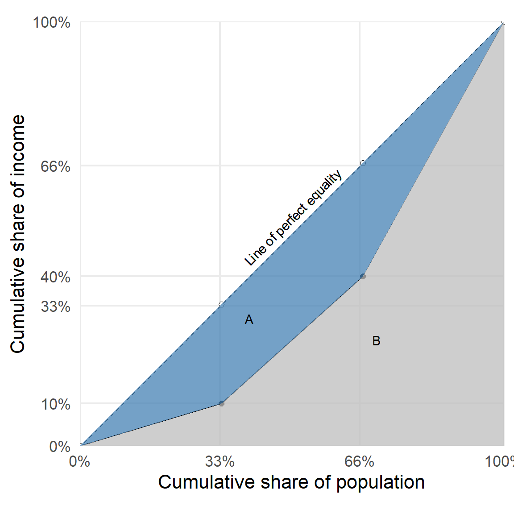

| person | income | rank | cumulative income |
|---|---|---|---|
| X | 100 | 1 | 100 |
| Z | 300 | 2 | 400 |
| Y | 600 | 3 | 1000 |
Measuring inequality with the Gini coefficient
SBE PhD microteaching session
1 Income inequality around the world
2 A measure of inequality: the Gini coefficient
2.1 What is the Gini coefficient?
- Measures inequality in any distribution
- \(G=0\) means perfect equality (everyone has the same income)
- \(G=1\) means perfect inequality (one person has all the income)
2.2 How to calculate the Gini coefficient?
- Sort incomes from lowest to highest
- Plot the cumulative share of income against the cumulative share of the population (Lorenz curve)
Example income distribution in a country with 3 people with cumulative income shares:

Gini coefficient formula:
\[G = \frac{A}{A+B}\]
2.3 Try it for yourself
Use this Gini coefficient calculator for a sample population with
- \(n=1000\) people (adjust slider on right)
- 800 people earn 50K (adjust the bars on the left figure)
- 200 people earn 200K (adjust the bars on the left figure)
- What is the Gini coefficient for this population?
- If the 200 people earn 100K instead of 200K, will the Gini coefficient increase or decrease?
- What if instead 600 people earn 50K and 400 people earn 200K? Why?
3 Income inequality around the world (again)
4 Take a minute to reflect
- Do you find the Gini coefficient a good tool for measuring income inequality?
- Do you see any limitations to the Gini coefficient?